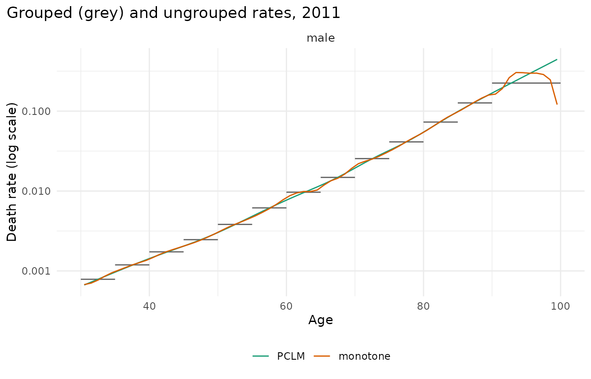
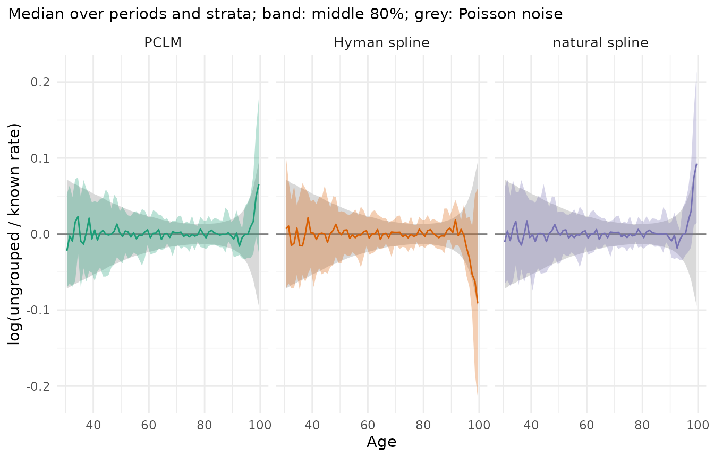
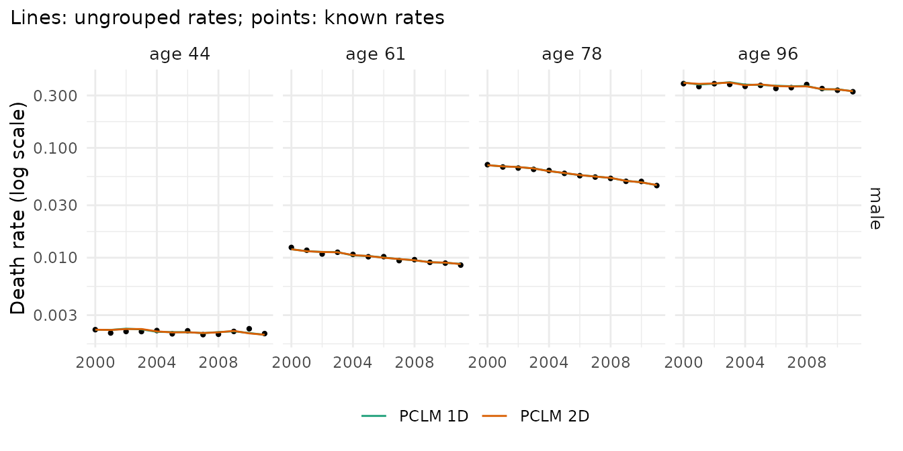
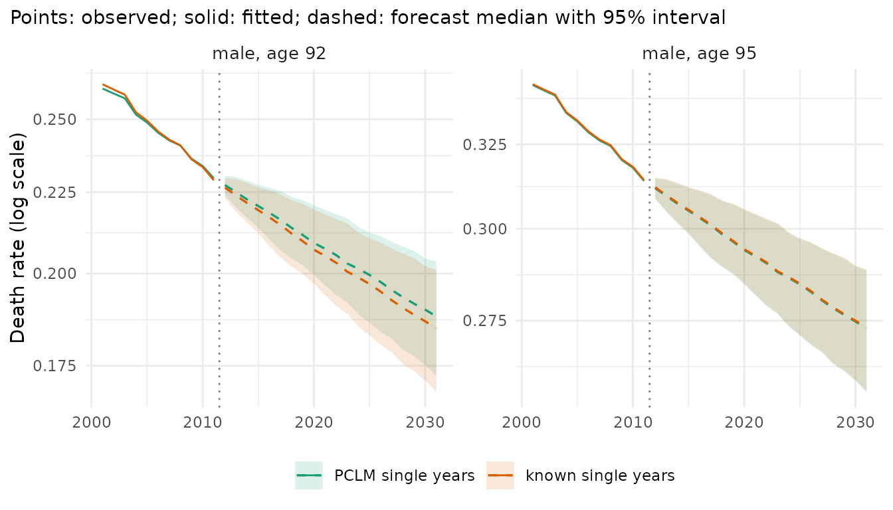

Official tables often give deaths in 5-year age groups and populations by single year of age. Many models are easiest to use on single years. There are two ways to bring the two together:
-
regroup everything to the age groups of the deaths
(
mt_regroup(x, age = "deaths")) and model the groups; nothing is estimated, but the age detail is lost; -
ungroup the deaths: estimate single-year deaths
from the observed groups (
mt_ungroup()).
This vignette compares the ungrouping methods, shows the diagnostics that check a result, and the consequence for a forecast. The test case is data whose single years are known: England & Wales men, 1980-2011, ages 30-99 (Human Mortality Database, via the StMoMo package). Their deaths are grouped as an official table would group them, ungrouped again, and compared with what was observed.
library(mortensor)
ew <- as_mt_data(StMoMo::EWMaleData)
ew <- mt_subset(ew, ages = c(30, 100), periods = c(1980, 2011))
x <- mt_regroup(ew, age = c(seq(30, 85, 5), 90), measures = "deaths")
x
#> <mt_data> 1 stratum by sex, omega = 110
#> deaths mixed widths (5,10) 30-99; periods 1980-2011 (width 1); 416 cells
#> exposure single years 30-99; periods 1980-2011 (width 1); 2240 cells
#> grid <mt_axis: age, 70 intervals> 30 31 32 33 ... 97 98 99
#> <mt_axis: period, 32 intervals> 1980 1981 1982 1983 ... 2009 2010 2011The deaths are now in the groups 30-34, …, 85-89 and 90-99; the
exposures keep their single years (measures = "deaths"
regroups only the deaths). HMD data downloaded directly are read with
mt_read_hmd().
The methods
method |
Idea | Needs exposures |
|---|---|---|
"pclm" (default) |
penalized composite link model (Eilers 2007; Rizzi et al. 2015): a smooth rate schedule whose expected deaths, summed over each group, are fitted to the group totals; the exposures enter as offset | yes (or ungroups counts) |
"monotone" |
monotone cubic interpolation of the cumulative deaths (Hyman 1983), counts only | no |
With dims = 2, the PCLM estimates a smooth surface over
age and year instead of each year separately. The PCLM estimates rates,
so the irregular sizes of birth cohorts stay in the exposures; the
monotone spline splits the counts and does not use the exposures.
Here the grid ends at age 99. When it ends with an open interval (for
example 100+), the PCLM of the rates expands that interval into single
years up to omega and splits its exposure over them by a
PCLM of the exposures (open_split = "pclm", as Rizzi et
al. 2015 ungroup grouped exposures).
open_split = "stationary" uses the weights of a stationary
population instead, a method specific to this package.
u <- list("PCLM" = mt_ungroup(x), "monotone" = mt_ungroup(x, method = "monotone"))Diagnostic 1: do the estimates pass through the groups?
The observed rates of the age groups (grey steps) and the ungrouped single-year rates in 2011:
mt_plot_ungroup(x, u, period = 2011)
Both pass through the steps and agree up to age 90. In the last group nothing in the data says how the rates rise between ages 90 and 99: the PCLM continues the rise of the rates below 90, while the monotone spline of the cumulative deaths lets the rates rise and then fall towards 99.
Diagnostic 2: errors against the known single years
mt_ungroup_check() compares the estimates with the known
rates by age band. mae_log is the median absolute log error
(close to the relative error for small values). The known rates contain
Poisson noise, so even perfect estimates would not reach zero:
noise_log is the error that perfect estimates would have.
bias_log is the median signed error, and
max_rel_gap the largest relative difference between the
estimated and the observed group totals.
mt_ungroup_check(u, reference = ew)
#> method band mae_log noise_log bias_log at_bound max_rel_gap
#> <fctr> <fctr> <num> <num> <num> <num> <num>
#> 1: PCLM 30-44 0.03090 0.03040 7.63e-04 0 0.0259
#> 2: PCLM 45-64 0.01770 0.01510 -4.15e-04 0 0.0259
#> 3: PCLM 65-84 0.00976 0.00748 3.64e-06 0 0.0259
#> 4: PCLM 85+ 0.01550 0.01400 2.51e-03 0 0.0259
#> 5: monotone 30-44 0.03300 0.03040 -2.10e-03 0 0.0000
#> 6: monotone 45-64 0.02630 0.01510 1.85e-03 0 0.0000
#> 7: monotone 65-84 0.02100 0.00748 9.33e-05 0 0.0000
#> 8: monotone 85+ 0.06660 0.01400 -5.48e-03 0 0.0000In every age band the errors of the PCLM exceed the noise floor by at most 0.3 percentage points: its rates are almost as close to the observed single years as the true rates would be. The PCLM does not reproduce each group total exactly; here it misses them by up to 2.6%. The monotone spline reproduces the totals exactly, but its errors exceed the noise floor by 1.1 and 1.4 percentage points at ages 45-64 and 65-84 and by 5.3 points at 85 and over: it splits the deaths without the exposures, so the irregular sizes of birth cohorts within a group end up in the rates. Where the methods differ shows in the log ratio of the estimated to the known rates by age, with its range over the years (coloured) and the range of the Poisson noise (grey):
mt_plot_ungroup(x, u, type = "error", reference = ew)
Up to age 95 the PCLM estimates scatter within the noise band; at the top of the last group they overestimate the rates at 99 by about 7%. The monotone spline falls far below the known rates above age 95. An open or wide last group is where ungrouping is least reliable, and where methods should be compared.
Diagnostic 3: stability over time
Ungrouping each year separately (dims = 1) can let
single ages jump from year to year. The two-dimensional PCLM
(dims = 2) smooths over the years as well. It is slower, so
the comparison uses 2000-2011:
xr <- mt_subset(x, periods = c(2000, 2011))
u_time <- list("PCLM 1D" = mt_ungroup(xr), "PCLM 2D" = mt_ungroup(xr, dims = 2))
mt_ungroup_check(u_time, reference = ew)
#> method band mae_log noise_log bias_log at_bound max_rel_gap
#> <fctr> <fctr> <num> <num> <num> <num> <num>
#> 1: PCLM 1D 30-44 0.03100 0.02980 0.000800 0 0.0183
#> 2: PCLM 1D 45-64 0.01950 0.01590 -0.000315 0 0.0183
#> 3: PCLM 1D 65-84 0.00976 0.00814 0.000922 0 0.0183
#> 4: PCLM 1D 85+ 0.01770 0.01150 0.004620 0 0.0183
#> 5: PCLM 2D 30-44 0.03160 0.02980 -0.001900 0 0.0697
#> 6: PCLM 2D 45-64 0.01880 0.01590 -0.001700 0 0.0697
#> 7: PCLM 2D 65-84 0.00998 0.00814 0.001100 0 0.0697
#> 8: PCLM 2D 85+ 0.01920 0.01150 0.006350 0 0.0697
mt_plot_ungroup(xr, u_time, type = "time", reference = ew)
The lines are the ungrouped rates at four ages, the points the known rates. Both versions follow the trend of the known rates. For these large counts the difference between 1D and 2D is small; it matters more for small populations, where the 2D surface borrows strength from neighbouring years. The 2D surface misses the group totals by more (up to 7.0%, against 1.8% in 1D), because it also smooths over the years.
The estimates are the fitted values of the PCLM, as published. With
preserve_totals = TRUE, mt_ungroup() rescales
the estimates within each group to the observed total after the fit.
This rescaling is specific to this package (reference unknown): it
creates steps at the group boundaries, and in 2D it puts the
year-to-year noise of every group back onto the smooth surface. Inside
backtests, ungrouping in 2D must see only the training years: use
step_ungroup(dims = 2) in the preprocessing.
Grouped exposures
When the populations are grouped as well, they are ungrouped first,
as counts (exposure_method = "pclm") or by a monotone
spline of the cumulative counts ("monotone", which
reproduces the group totals exactly). Here the exposures are grouped and
the deaths kept by single year, so the errors of the rates come from the
exposures alone:
xe <- mt_regroup(ew, age = c(seq(30, 85, 5), 90), measures = "exposure")
mt_ungroup_check(list("PCLM" = mt_ungroup(xe), "monotone" = mt_ungroup(xe, exposure_method = "monotone")),
reference = ew)
#> method band mae_log noise_log bias_log at_bound max_rel_gap
#> <fctr> <fctr> <num> <num> <num> <num> <num>
#> 1: PCLM 30-44 0.0109 0.03040 -9.02e-04 0 0.000496
#> 2: PCLM 45-64 0.0187 0.01510 -1.53e-03 0 0.000496
#> 3: PCLM 65-84 0.0209 0.00748 -9.19e-05 0 0.000496
#> 4: PCLM 85+ 0.0644 0.01400 -1.21e-02 0 0.000496
#> 5: monotone 30-44 0.0105 0.03040 -1.90e-04 0 0.000000
#> 6: monotone 45-64 0.0159 0.01510 -7.44e-04 0 0.000000
#> 7: monotone 65-84 0.0168 0.00748 -7.52e-04 0 0.000000
#> 8: monotone 85+ 0.1580 0.01400 2.36e-02 0 0.000000Below age 85 both methods err by 1-2%, which at ages 65-84 is more than the noise of the deaths. At ages 85 and over, where the population falls steeply with age, the PCLM errs by about 6% and the monotone spline by about 16%. Splitting an open interval of populations (for example 85+ into single years up to 100+) from its total alone is not reliable at all: use population data with a higher open age, which many statistical offices publish, or keep the open interval.
The consequence for a forecast
Lee-Carter fitted to the age groups, to the PCLM estimates and to the known single years, forecast to 2031. Life expectancy at 30 sums over all ages, so it is the quantity least affected by the details within a group:
fc <- list("age groups" = mt_forecast(mt_fit(lee_carter(), mt_regroup(x, age = "deaths")), h = 20, n_draws = 500,
seed = 1),
"PCLM single years" = mt_forecast(mt_fit(lee_carter(), u$PCLM), h = 20, n_draws = 500, seed = 1),
"known single years" = mt_forecast(mt_fit(lee_carter(), ew), h = 20, n_draws = 500, seed = 1))
mt_compare_forecasts(fc, periods = c(2021, 2031), digits = 2)
#> Key: <label, period>
#> label period age groups PCLM single years known single years
#> <char> <num> <char> <char> <char>
#> 1: male 2021 52.39 (51.22-53.42) 52.02 (50.90-53.01) 52.02 (50.90-53.01)
#> 2: male 2031 54.22 (52.73-55.50) 53.83 (52.37-55.27) 53.82 (52.37-55.27)
mt_plot_compare(fc, quantity = "rate", ages = c("92", "95"), periods = 2001:2031)
Forecasts from the PCLM estimates and from the known single years give life expectancies at 30 within 0.01 years of each other. The forecast from the age groups is 0.4 years higher: its life table assumes that the deaths of each group fall in the middle of the group, which overstates survival where mortality rises steeply within a group, above all in the 10-year group 90-99. The single-year rates at 92 and 95 forecast from the PCLM estimates follow those from the known rates closely; a model of the groups has no rates for single ages at all (the figure shows only the two single-year forecasts). Ungrouping is worth its assumptions where single ages are needed: for life tables of wide groups, for cohort models, or for results at exact ages.
Summary
- Ungroup deaths as rates, with the exposures on the target grid as
offset (
mt_ungroup(), PCLM by default). The estimates are the fitted values of the PCLM;preserve_totals = TRUErescales them to the group totals (a step of this package). - Check every result:
mt_plot_ungroup()(profile, errors, stability over time) andmt_ungroup_check()(fit diagnostics, and errors where single years are known). - The last, wide or open age group is where methods differ; compare them there.
- Inside forecasting pipelines, ungrouping is a preprocessing step
(
step_ungroup()), refitted on each training window.
References
Eilers PHC (2007). Ill-posed problems with counts, the composite link model and penalized likelihood. Statistical Modelling 7(3): 239-254.
Hyman JM (1983). Accurate monotonicity preserving cubic interpolation. SIAM Journal on Scientific and Statistical Computing 4(4): 645-654.
Rizzi S, Gampe J, Eilers PHC (2015). Efficient estimation of smooth distributions from coarsely grouped data. American Journal of Epidemiology 182(2): 138-147.